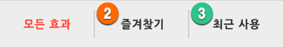
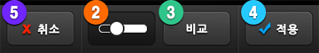
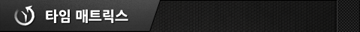
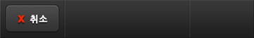

3.  필터효과(Preset) 메뉴
필터효과(Preset) 메뉴
(1) FX 스튜디오(FX studio) : 총200개의 FX 효과 중 원하는 필터를 선택하여 다양한 효과를 손쉽게 적용할 수 있습니다.
FX 스튜디오(FX studio) : 총200개의 FX 효과 중 원하는 필터를 선택하여 다양한 효과를 손쉽게 적용할 수 있습니다.

200가지 FX 효과는 총 10가지의 테마로 분류되어 있습니다. 원하는 테마를 선택하면 효과 목록을 확인할 수 있습니다.


(효과 목록 화면)
FX 효과 옆의 ①별표(☆)를 누르면 ②즐겨찾기(Favorite)에 등록됩니다. 즐겨찾기(Favorite)는 최대 30개까지 등록됩니다.
③최근 사용(History) 목록에는 가장 최근에 적용(Apply)한 20개의 FX 효과가 자동으로 등록됩니다.
※ 즐겨찾기(Favorite)와 최근 사용(History) 목록은 최대 개수 초과 시 신규 등록된 FX 효과로 자동 갱신됩니다.
목록 중에서 하나의 FX 효과를 선택하면 FX 적용 화면에서 확인할 수 있습니다.


(FX 적용 화면)
FX 적용 화면 하단의 ①조절슬라이더(Control slider)를 움직여 효과의 강약(Opacity)을 실시간으로 조절 할 수 있습니다.
하단의 ②Bar 토글 버튼을 누르면 슬라이드 바를 사라지게 하여 전체 사진을 확인할 수 있습니다.
③원본 비교(Compare) 버튼을 누르면 효과 적용 전의 사진과 비교하여 볼 수 있습니다.
④적용(Apply) 버튼을 누르면 현재 효과를 사진에 적용한 다음 메인 화면으로 돌아갑니다.
⑤취소(Cancel) 버튼을 누르면 현재 효과를 취소하고 메인 화면으로 돌아갑니다.
※ 하단 버튼의 기능은 다른 화면에서도 동일하게 동작합니다.
※ 사진을 좌/우로 밀면 (Swipe) 이전/다음 필터 효과를 확인할 수 있습니다.
좌측 상단의 ⑥FX 버튼을 누르면 효과 목록 화면으로 이동합니다.
우측 상단의 ⑦Time Matrix 버튼을 이용하면 FX 효과를 좀 더 재미있게 이용할 수 있습니다. 자세한 설명은 아래 내용을 확인하세요.
(2) 타임 매트릭스(Time Matrix) : 타임 매트릭스를 이용하여 사진과 함께 시간 여행을 떠나 보세요!
타임 매트릭스(Time Matrix) : 타임 매트릭스를 이용하여 사진과 함께 시간 여행을 떠나 보세요!



타임 매트릭스(Time Matrix)는 과거 특정한 시점의 분위기에 맞는 효과를 자동으로 추천해 주는 기능입니다.
오른쪽 ①타임 슬라이더(Time Slider)를 움직여 원하는 년도로 이동하면 Time Matrix가 자동으로 그 시대의 분위기에 어울리는 ②3개의 FX 효과를 추천하여 보여줍니다. 추천하는 3가지 효과는 항상 동일하지는 않습니다.
3가지 효과 중 마음에 드는 효과를 선택하면 FX 적용 화면으로 이동합니다. 이곳에서 동일하게 효과를 조절하고 적용하거나 Time Matrix 버튼 을 눌러 Time Matrix로 다시 돌아갈 수 있습니다.
을 눌러 Time Matrix로 다시 돌아갈 수 있습니다.